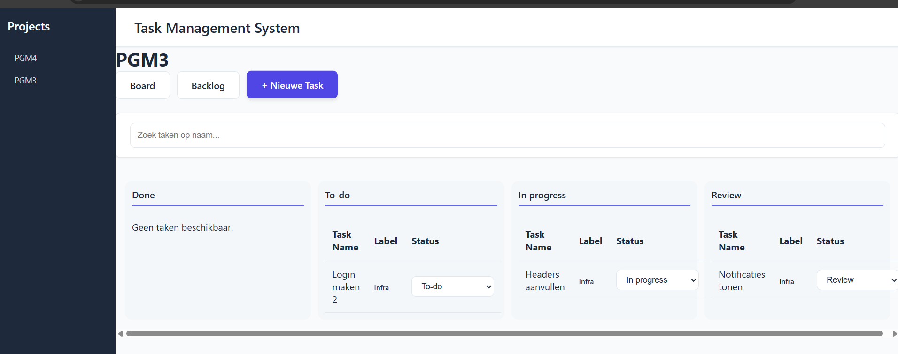

Task Manager
My first React project focused on functionality over styling. I learned server-side rendering, CRUD operations without page refreshes, and React's component-based architecture—concepts that proved invaluable for future development.
